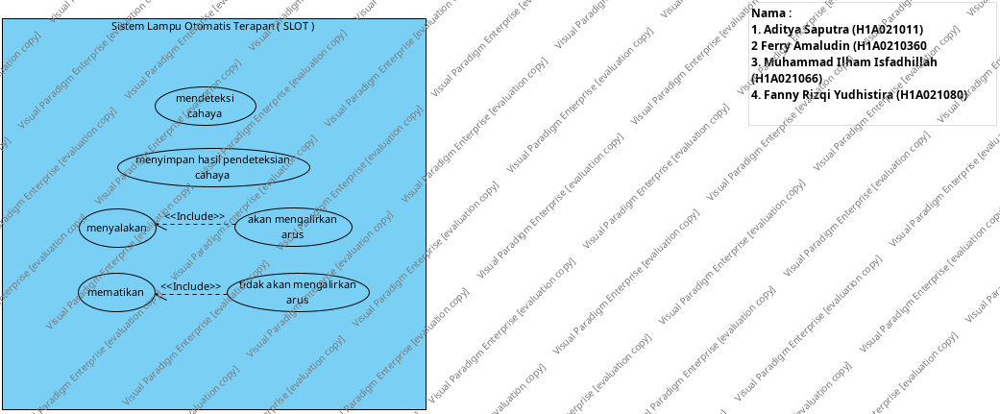

Tugas Lampu Otomatis System Embedded
Project Link
Page URL
with Name
Use Case Diagram - UD1
link
Jump to:
Please select a model element
Sistem Lampu Otomatis Terapan ( SLOT ) : System
akan mengalirkan arus : Use Case
tidak akan mengalirkan arus : Use Case
menyimpan hasil pendeteksian cahaya : Use Case
mendeteksi cahaya : Use Case
menyalakan : Use Case
mematikan : Use Case

Model Elements
Name
Description
Sistem Lampu Otomatis Terapan ( SLOT ) : System
akan mengalirkan arus : Use Case
tidak akan mengalirkan arus : Use Case
menyimpan hasil pendeteksian cahaya : Use Case
mendeteksi cahaya : Use Case
menyalakan : Use Case
mematikan : Use Case
Tugas Lampu Otomatis System Embedded